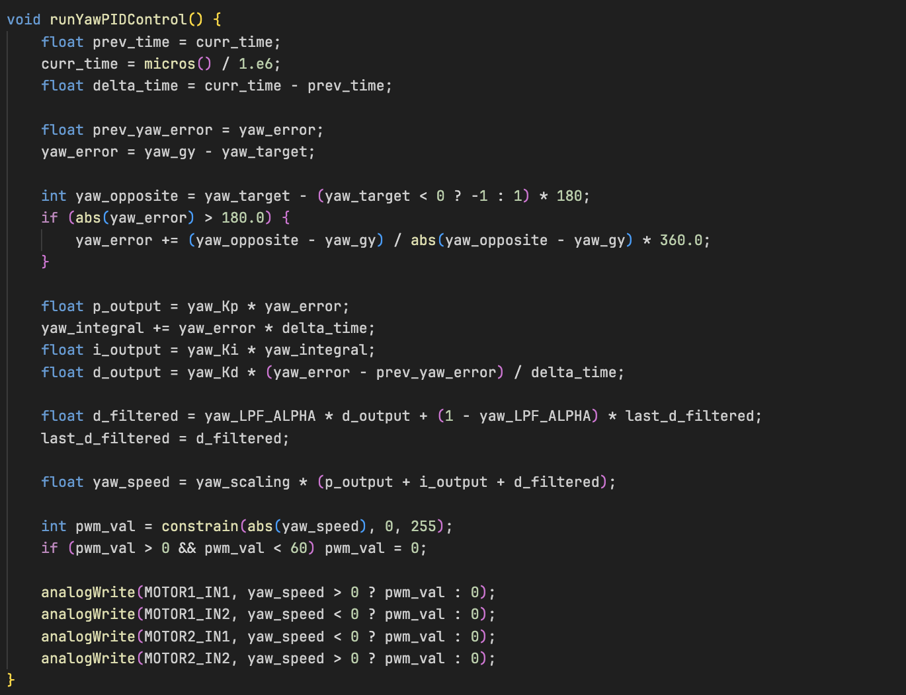
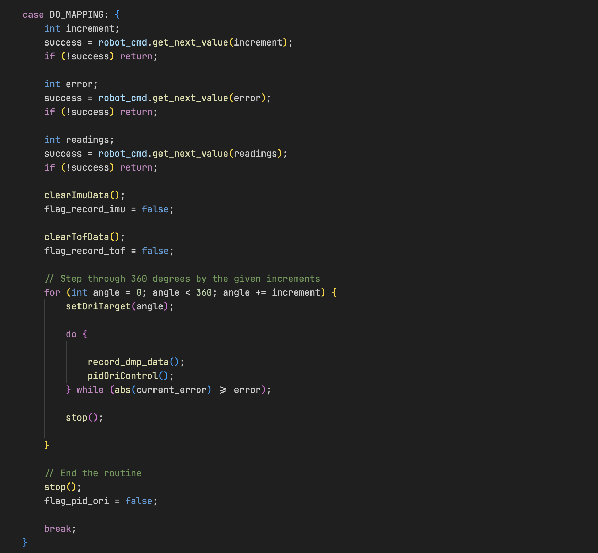

Lab 9: Mapping
Objective
In this lab, we set out to create a map of a known room using our robot’s onboard sensors. By collecting ToF distance readings while rotating in place at several marked positions, we were able to capture a snapshot of the surroundings from multiple angles. These readings were later merged into a single coordinate frame to build a simplified line-based map that we’ll use in future localization and navigation labs.
Orientation Control
To enable precise in-place rotation for my robot, I utilized the PID controller that I had implemented in a previous lab, which was based on the yaw angle computed from the ICM DMP. The DMP outputs quaternion-based orientation data, which I converted to Euler angles to extract the yaw. This yaw angle served as the feedback signal for the PID control loop, which adjusted motor PWM signals to minimize heading error. The motivation for using orientation-based PID control, rather than open-loop control, was to ensure that the robot could collect ToF measurements from stable and repeatable angular positions. Without this closed-loop precision, rotation would be inconsistent or prone to drift, resulting in noisy and unreliable distance readings.
PID Control
Below is the PID control that I had implemented in Lab 6 which I utilized to handle orientation using real-time yaw readings:
Mapping
To automate the mapping process, I added a custom DO_MAPPING command to the Artemis BLE command handler. This command triggers a full 360-degree scan of the robot's environment using the Time-of-Flight (ToF) sensor and orientation feedback from the IMU. The idea for this mapping routine was adapted directly from Stephen Wagner’s implementation, whose approach demonstrated reliable and consistent scanning behavior during incremental yaw adjustments.
This scanning loop repeats until the robot completes a full 360° rotation. After the scan is complete, I added a COLLECT_DATA command to collect the TOF Data. The entire mapping sequence was designed to run autonomously requiring just a single BLE command to initiate, which made the testing and debugging process far more efficient.
In my Python BLE control script, I added a function to trigger this routine:

This allowed me to tune the sweep resolution and number of sensor readings per orientation from my computer dynamically, without recompiling my arduino code everytime.
BLE PID Tuning and Yaw Setpoint Control
Before implementing the mapping routine, I needed to ensure that the robot could reliably rotate to specific angles. To achieved this, I introduced a new function to dynamically tuning the PID gains and setting yaw setpoints without requiring arduino recompilation. I introduced a SET_ORI_PID_VALUES BLE command that allowed me to update the PID constants over BLE. This command accepts four float parameters: proportional gain (Kp), integral gain (Ki), derivative gain (Kd), and a scaling factor (Sc). These values are parsed and stored in global PID variables, which are then used by the orientation control loop. Here’s sample of the BLE Python command used for tuning:
Below is a short video of the robot executing the step-and-scan routine. Despite careful tuning, some noticeable drift from the original position is still present. Achieving perfect in-place rotation proved challenging
Data Collection and Transformation
Once I was confident in my orientation PID controller, I moved forward with collecting mapping data. I used the custom DO_MAPPING Bluetooth command to automate the data collection process. This command was heavily inspired by Stephen Wagner’s implementation and allowed the robot to: (1) Rotate incrementally using the yaw PID controller. (2) Stop once the desired angular error was below a threshold. (3) Take multiple distance readings with the ToF sensor at each orientation. (4) Log the yaw angle and associated distance.
I placed the robot at four known grid locations in the lab:
For each location, I ran the DO_MAPPING command from the BLE terminal. This triggered a 360° sweep, collecting orientation-stamped ToF readings. Each dataset was sent over BLE and saved as a .csv file using my Python script.
Polar Plot Visualization
Before attempting any coordinate transformations or merging scans, I plotted the raw ToF data from each robot location in polar coordinates to verify that the readings made sense. This served as a quick sanity check to assess whether the robot was correctly rotating and whether the distances it recorded reflected the environment.
Each reading was visualized using the yaw angle as the angle (θ) and the ToF distance (r) as the radius. I generated separate plots for each scan location (e.g., (-3, -2), (0, 3), (5, 3), (5, -3)), and the resulting polar graphs revealed discernible shapes — such as flat segments corresponding to walls and empty regions where the sensor faced open space.
These visualizations gave me confidence that the orientation PID controller was turning the robot in consistent angular steps, The ToF sensor was providing stable, noise-resistant readings and that the robot was generally maintaining its position during the scan.
I also used this step to decide whether any scans should be re-run. Since the results were fairly clean, I kept all four initial scans and moved on to the next stage of transforming the data into the world frame.
.png)
.png)
.png)
.png)
The resulting plots aligned well with expectations and comparisons with reports from past years, clearly showing shorter distances near walls and longer readings in open areas.
Transformations
To merge the ToF scans into a single global map, I transformed each sensor reading from the robot’s local frame to the arena’s global reference frame. I used the standard transformation chain we learned in Lecture 2:
\( P_i = T_R \cdot T_{TOF} \cdot P_{TOF} \)
Each raw sensor point was modeled as:
\( P_{TOF} = \begin{bmatrix} r \\ 0 \\ 1 \end{bmatrix} \)
Where \( r \) is the ToF distance measurement in millimeters, relative to the sensor frame (along the sensor's x-axis). I then defined the following transformation matrices:
Sensor to robot body frame (since the sensor is mounted 70 mm in front of the robot center, with no rotation):
\( T_{TOF} = \begin{bmatrix} 1 & 0 & 70 \\ 0 & 1 & 0 \\ 0 & 0 & 1 \end{bmatrix} \)
Robot body to world frame, based on the robot's known position \( (x, y) \) and yaw angle \( \theta \) (from DMP):
\( T_R = \begin{bmatrix} \cos\theta & -\sin\theta & x \\ \sin\theta & \cos\theta & y \\ 0 & 0 & 1 \end{bmatrix} \)
Multiplying everything out, the world-frame position of each ToF reading became:
\( P_i = \begin{bmatrix} x + (l + r)\cos\theta \\ y + (l + r)\sin\theta \\ 1 \end{bmatrix} \)
Where:
\( l = 70 \) mm is the sensor offset, ( r ) is the raw distance from the ToF sensor,
(x, y) is the robot’s position at the time of the scan, ( \theta \) is the yaw from the IMU (converted to radians).
This approach let me accurately map each point into the global room frame, accounting for both the sensor placement
and the robot’s orientation. Once transformed, these points were used to construct the merged map and eventually
the line-based representation for use in simulation.
Creating the Line-Based Map
After transforming all my ToF data into global coordinates, I manually drew a line-based map over the merged scatter plot to approximate the actual structure of the lab environment. This was done to simplify the raw data into a clean set of boundaries and obstacles suitable for use in later localization and navigation tasks.
I used matplotlib to overlay straight line segments on top of the mapped points. These lines represent approximate walls and obstacles in the environment. To do this, I visually estimated the main boundaries by looking at the clustering of the ToF readings and selected endpoints that best captured those edges. The map includes both outer walls and one interior obstacle. I stored each line as a pair of start and end coordinates, which will be used in the simulator during the next lab. Here are the final endpoints for each segment:
Conclusion
This lab was a huge step forward in helping me understand how raw sensor data can be transformed into something meaningful and useful for navigation. By combining reliable orientation control with a consistent mapping pipeline, I was able to build a fairly accurate representation of the room using just a single ToF sensor and a series of controlled rotations. Overall, despite the noise and imperfections in the data, this lab demonstrated how a simple sensor setup can still produce useful environmental insight when combined with smart control and post-processing.
[1] Huge thanks to Stephan Wagner (2024) for the inspiration and helpful documentation throughout this process.